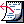
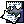
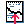
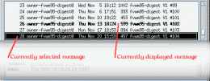

Reading Mail
{kind=link}
The menubar provides access to all the functionality of privtool which can be discovered by browsing through the menus. Specific menu functions will be mentioned as appropriate in this guide.
The toolbar contains buttons which allow quick access to commonly
used functions. The buttons currently available are:
| Previous mail message. | |
|  | Next mail message. |
|  | Delete selected messages. |
|  | Undelete selected messages. |
| Raise/Lower folder window. |
The righthand side of the toolbar contains a combo box where a folder name (or filename) can be selected or typed. This defines the current folder for folder operations (copy to, move to or load folder from the Folder menu).
The different areas can be resized by dragging the horizontal sash lines that separate the areas.

{kind=link}
A message can be displayed by double-clicking on its summary line, by clicking on the Previous or Next toolbar buttons or by selecting Previous or Next from the View menu.
Other messages can be selected at times and these summary lines are shown in reverse (white text on black background). Selected messages can be deleted and undeleted (more than one at a time is possible). There are also some other actions possible with selected messages which will be discussed later.
|
n
|
- next message |
|
p
|
- previous message |
|
<space>
|
- page down the current message |
|
b
|
- page up the current message |
|
d
|
- delete message(s) |
|
c
|
- compose new message |
|
f
|
- forward message |
|
rs
|
- reply to sender, include message |
|
ra
|
- reply to all, include message |
In addition, there are also keyboard accelerators on some of the menu items. These can be determined by browsing the menus.
Each toolbar button has a tooltip to give a brief hint about the function of the button. This is implemented with the Liteclue widget.

Deleted messages can be displayed in the message list by selecting the Show Deleted toggle in the View menu. When they are visible in the list they are represented as a struck-through message summary.
A deleted message can still be read by double clicking on its summary line, however the previous and next operations will skip deleted messages.
To undelete messages simply select the messages you want undeleted and select the undelete toolbar button or select Undelete from the Edit menu.
If you don't have deleted messages displayed then selecting Undelete Last from the Edit menu will undelete the last deleted message.
Deleted messages are unrecoverable when a folder is loaded or Save Changes is selected from the File menu.